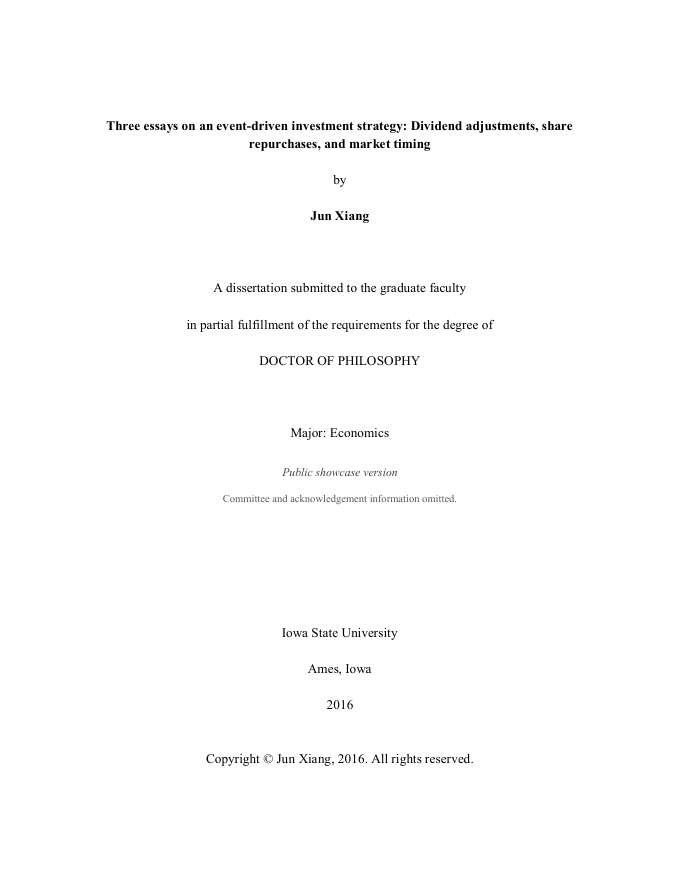

Ph.D. Dissertation - Jun Xiang, Ph.D. in Economics

Three essays on an event-driven investment strategy: Dividend adjustments, share repurchases, and market timing
AI Summary & Evaluation
Key Findings
A dividend cut is not always the same signal. Dividend cuts usually trigger negative market reactions, but the reason behind the cut matters. A cut can reflect deteriorating fundamentals—or a deliberate reallocation of capital.
Buybacks help reveal management’s response. If repurchases rise after a dividend cut, the behavior can be consistent with management seeing undervaluation. If repurchases also fall, cash preservation and financing pressure are more likely to dominate.
The signal is conditional on the firm. The dissertation uses three characteristics to distinguish the mechanisms: smaller firms proxy for greater information asymmetry, lower leverage for greater financial flexibility, and lower market-to-book for a lower opportunity cost of using cash for repurchases.
Assessment
Research Contribution
The dissertation moves beyond treating dividend cuts or buybacks as standalone signals. It develops a conditional framework for distinguishing between market timing and financial-fundamental motives behind the same corporate event.
Investment Use
The practical question is not simply whether a company cut its dividend or announced a buyback, but why management changed the allocation of capital—and whether firm characteristics support that interpretation.
Interpretation Boundary
The framework identifies corporate behavior and management incentives; it does not establish a standalone investor trading rule. Predictive return performance requires separate out-of-sample validation.
Contemporary Relevance
Recent companies still exhibit the behavior studied in the dissertation: reducing dividends while shifting capital toward share repurchases. The examples below apply the dissertation’s three conditioning variables to recent non-financial cases. They are illustrative cases, not a validation sample.
| Company | Event | Size | Lev. | MB | Fit | 1D | 1M | 3M | 6M |
|---|---|---|---|---|---|---|---|---|---|
| Hooker Furnishings | Dec. 11, 2025 — dividend -50% + $5m buyback | ✓ | ✓ | ✓ | ★★★★★ | -3.3% | +9.2% | +19.3% | +42.7% |
| Barratt Redrow | Jul. 15, 2026 — ordinary dividend largely replaced by ~£386m buyback | ✗ | ✓ | ✓ | ★★★★☆ | +4.3% | +15.8% | +14.4%* | N/A |
| Braemar | May 29, 2025 — reduced dividend + up to £2m buyback | ✓ | ~ | ~ | ★★☆☆☆ | -7.8% | -17.6% | -9.8% | -12.9% |
✓ = characteristic aligns with the dissertation’s market-timing profile.
✗ = characteristic points in the opposite direction.
~ = evidence is neutral or not sufficiently clear.
Framework Fit summarizes alignment with the dissertation’s Size / Leverage / Market-to-Book screen. It is not an investment rating.
* Barratt Redrow has not yet reached a full three-month horizon. The 3M figure uses the latest available price through Oct. 2, 2026, approximately 2.6 months after the event.
Returns are simple price returns measured from the trading-day close immediately before the event. They are not market-adjusted abnormal returns and should not be interpreted as causal estimates.
The same “dividend cut + buyback” event can lead to very different outcomes; the capital-allocation change itself is not the signal—the firm-specific context is.
Ask AI About the Research
A planned AI Q&A feature to help you explore the dissertation’s findings, evidence, and limitations.
Expected to release in Nov 2026.
Example questions
- How should investors use size, leverage, and market-to-book to interpret a dividend-cut event today?
- Which recent dividend-cut and buyback cases most closely match the dissertation’s framework—and how did the stocks perform afterward?
- What additional evidence would be needed before turning the dissertation’s framework into a real trading signal?